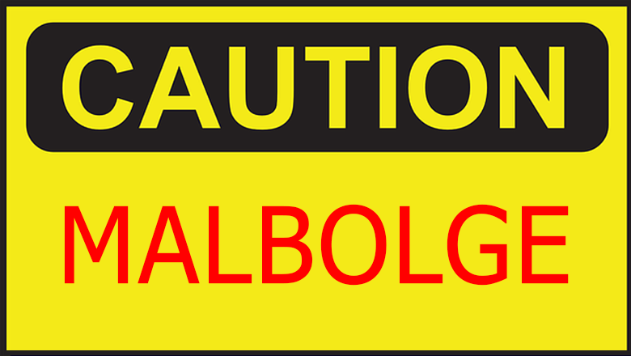

Please be sure to only enter the terms in bold. This form is not case sensitive.
Based on your responses, we think you should learn: Ruby

Released in 1995, Ruby is a general purpose, open source programming language created by Japanese computer scientist Yukihiro "Matz" Matsumoto. It's design is meant to be productive and simple and was influenced by Matsumoto's favorite programming languages: Perl, Smalltalk, Eiffel, Ada, BASIC, Java, and Lisp.
Based on your responses, we think you should learn: C#

Designed in 2000 by Danish software engineer Anders Hejlsberg from Microsoft, C# is a general purpose, high level programming language. It enables developers to build a wide variety of secure applications that run in .NET framework. Since you indicated that you'd like to work at Microsoft, it might be worth it to add C# to your skillset as a professional developer.
Based on your responses, we think you should learn: JavaScript

Designed in the mid 90's by Netscape engineer Brendan Eich, JavaScript is a core technology of the World Wide Web, next to HTML and CSS. It was created to make webpages more dynamic and interavtive, responding to user behavior. It's the most used programming language in the world, and a great language to build a foundation with if you're new to coding.
Based on your responses, we think you should learn: Go

Go, also known as Golang, is an open-source programming language designed at Google by Robert Griesemer, Rob Pike, and Ken Thompson in 2007. Its versatility and simplicity make it a popular choice for developers and teams. Since you indicated you're interested in landing a job at Google, it might be worthwhile to add Go to your skillset as a professional developer.
Based on your responses, we think you should learn: Python

Python is a high level, general purpose programming language designed in the late 1980's by Dutch programmer Guido van Rossum. It can be used to build a variety of websites and software, widely used, and is relatively easy to learn.
Based on your responses, we think you should learn: Rust
Rust is a high level, general purpose programming language designed by Mozilla Research developer Graydon Hoare. Its first stable release was in 2015, and it is a relatively new programming language that emphasizes performance and is popular for systems programming.
Based on your responses, we think you should learn: Swift

Developed by Apple and the open-source community, Swift was relesed in 2014. It is a high-level general purpose language primarily used to build iOS applications. Since you indicated that you'd like to land a job with Apple, it might be useful to add Swift to your skillset.
Based on your responses, we think you should learn: HTML

Hyper Text Markup Language (HTML, for short) is the standard language used to create web pages. Using a series of elements paired with text, HTML describes the structure of a webpage to the web browsers displaying them. HTML was invented in 1991 by Tim-Berners-Lee while he was working as a contractor for the European Organization for Nuclear Research.
Based on your responses, we think you should learn: CSS

CSS is a style sheet language used for describing the display syle of markup language such as HTML. Along with JavaScript and HTML, CSS is a core technology of the World Wide Web, and is a great place to start programming if you enjoy creative design.
Based on your responses, we think you should learn: Java
Developed at Sun Microsystems by James Gosling, Java is a high-level, class based programming language designed to have as few implementation dependencies as possible and allow programmers to write once, run anywhere. It was named after a particular type of coffee from Indonesia that Gosling's team reportedly drank on a daily basis.
Based on your responses, we think you should learn: Malbolge
Malbolge is an esoteric programming language, designed in 1998 by Ben Olmstead. Named after the eighth circle of hell in Dante's Inferno, the 'Malebolge', it was deliberately designed to be next to impossible to use.